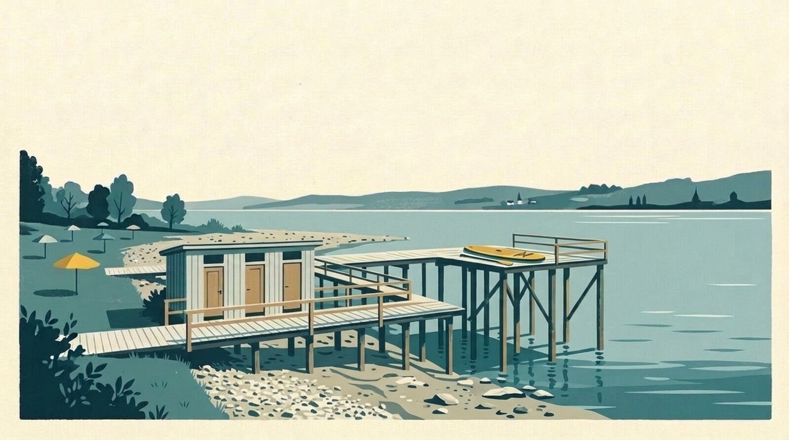

In short
According to an Eawag analysis (30 September 2026), the level of 12 of the 26 large lakes studied had never been so low at the end of September since 1970. Worst hit: Lake Zurich, at 405.28 m on 28 September, 62 cm below the previous record of 2009. 23 of 24 modelled lakes had never had such warm surface water since 1981.
Which lakes
Besides Lake Zurich, lakes Constance, Walen, Sempach, Hallwil, Baldegg, Ägeri, Joux and Zug reached historic lows; the Untersee was 39 cm below its lowest late-September level, from 2003. Lake Geneva, lakes Thun and Brienz and the Engadine lakes stayed closer to normal: their Alpine catchments got a little more rain and glacier meltwater. Lake Brienz still received about 89% of its usual inflow, Lake Zurich 23%, Lake Constance 28%.
Regulation and evaporation
On Lake Geneva, which received 73% of its usual inflow, the level was held by reducing outflow; the shortfall partly passed down the Rhône. On Lake Zurich, outflow into the Limmat was cut to 30 m³/s in mid-July, then to 20 m³/s from 1 October. The heat evaporated between 18 cm (Lake Brienz) and 52 cm (Lake Baldegg) from July to September, 5 to 19 cm more than in a normal summer.
Record-warm water
According to the Simstrat model, surface water averaged about three degrees above the 1991–2020 normal, up to four degrees in Lake Lucerne and Lake Walen. Our monthly averages: which lake for which month. Lake Geneva: the level of Lake Geneva.
The current water and wind, beach by beach, are in the My Lake app.
Lake Geneva’s water right now
Each beach’s water temperature is in the My Lake app, updated every three hours.